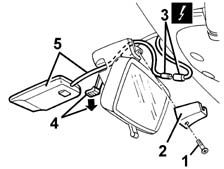

5580M70 aerial for on-board navigator - r r
- Path
- Procedures > 55 ELECTRICAL EQUIPMENT > 5580 SPECIAL ACCESSORIES > 5580M om-board navigator > 5580M70 aerial for on-board navigator - r r
- Kind
- repair procedure (removal / refitting; the operation number is the code)
- Applies to
- all engines; all production periods
- Interactive page
- https://sloeber94.github.io/elrnDB-fMltpl/en/#/2892000
Applies to: all engines; all production periods
 Removing
Removing
 Refitting
Refitting1. Undo the bolt securing the interior rear view mirror moulding.
2. Remove the moulding.
3. Disconnect the electrical connection.
 | Name | Connector |
|---|---|---|
3 | Front door junction left |
4. Lower the aerial retaining lever.
5. Remove the aerial and bridge.

Applies to: all engines; all production periods
Refitting
RemovingCheck that the aerial for the on-board navigator is not damaged.
Fit the aerial and bridge in place and secure them to the retaining lever.
Connect the electrical connection.
Fit the moulding and secure with the bolt.
Carry out the satellite navigator 'Menù Test' ( 5580M om-board navigator ).